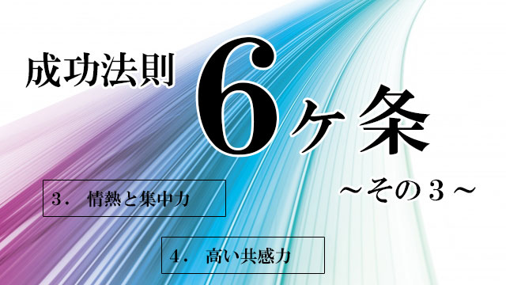

- 常識を疑う
- 物事を「ありのまま」に見る
- 情熱と集中力
- 高い共感力
- 誠実さと実行力
- 知的好奇心と勉強意欲
3 情熱と集中力
人が物事を成し遂げるとき、最も必要な力となるのが情熱と集中力です。
特に受験勉強とか会社のプロジェクトなど目標が明確であればあるほど、この情熱と集中力は威力を発揮するものです。
ただ、ここで気をつけなくてはならないのは「情熱と集中力」にも2種類があり、多くの場合それは一過性であり永続しないものだということです。
先の例で言えば、受験が終わったりプロジェクトが完成すると情熱と集中力は衰退します。
つまり目標が明確な時だけ燃え上がる情熱や集中力は、目標が失われると一気に冷めてしまう、ニセモノといえます。
同じくニセモノの情熱家というものもあります。
恋愛中の男女も情熱と集中力（？）を発揮しますが、残念ながら永続しません。
自分の好きなモノ―たとえばゲームやギャンブル―に情熱を燃やす人はたくさんいますが、必ずしも好ましい結果には至りません。
それどころか中毒になったり、生活が破綻したりと身を滅ぼすことさえあります。
これらは成功者の情熱とは全く異質のものです。
熱しやすく冷めやすかったり、方向性を誤った情熱ではなく永続的で価値ある情熱。それが私の言いたいもう一つの、ホンモノの情熱です。
ピュアな情熱は多くの人を動かす
それならほんとうの「情熱と集中力」とはどういうものでしょうか。
それは一言で言えば他者を巻き込む力です。
以前の記事（学力よりヒューマンスキルこそ育てたい）でも言いましたが、社会的活動では他者の協力なしでは何事も成し遂げられません。
1人だけでガンバったところで大した成果はあげられないのです。
そして他者の協力を得るということは、他者の心を動かすことに他なりません。
心を動かす。つまり感動ですが、人は口先だけの説得や目先の損得だけで動くわけではありません。
無私（自分の利害を計算に入れない）の精神を持った、情熱ある人にこそ心が動くのです。
そのような情熱は伝染するのです。
私の経験でも、大きな成果を成す人は他者を感動させ心に灯をつけることに秀でています。
心を一つにし、共通の目的に向かって協力し合うよう方向づけることができる。
その原動力としての「情熱がある」ということです。
子どもの勉強にも同じことが言えます。
入試合格とかテストの点を上げるためという、個人的（エゴ）な欲求だけでは高い意欲（情熱）を維持することは難しいが、たとえば医者になって多くの人を救いたいとか、環境に優しくカッコいい車を作りたいからデザイン工学を勉強したいということなら、今やっている勉強にも情熱を傾けられるでしょう。
人は、このように社会的意義に動機づけられたとき強い情熱と高い集中力を発揮することができ、その情熱も持続するものです。
熱意があるとか仕事熱心だという言葉だけでは足りません。そういう人はたくさんいます。深く考える人。知識が豊富な人もいますがそれだけでは他者を巻き込むことはできません。
「オレについて来い」と言わんばかりに意欲的にバリバリ人を引っぱって行く情熱でしょうか。小さな集団の小リーダーなら、そういう人物でも良いかも知れません。
しかし私が考える情熱とはもっと質の高いものです。
実は本物の情熱とは、今自分がしている仕事なり活動の中に社会的意義を見出すことなしにわき起こることはないのです。
たとえ自分の仕事が一見単調に見えようが、退屈なものだろうが、はたまた誰にもわかる花形の職種であろうと関係ないのです。
社会に貢献している。世のため人のために役立っている。自分の仕事が、誰かを喜ばせ幸せにすることに通じている。
このような信念に支えられた情熱をもっている人が強いのです。
このいわば理念的な裏付けのある情熱はピュアで、エゴイスティックではないから多くの人も協力しやすいのです。
なぜなら誰でも心の奥では人の役に立ちたい、自分が意義あることをしたいと望んでいるからです。
このように純粋な情熱はエネルギーレベルが高く、多くの人を感動させるので人々の協力が結集しやすく、結果として高いパフォーマンスがもたらされるのです。
世界的に名の知れた大企業も、多くは創業者とそれを取り巻く「理念集団」からスタートしました。彼らの武器はその純粋情熱だけだったと言えます。
「人々に最高のモノ、最高のサービスを提供しよう。」
「人々を幸せにしよう。」
ここにはシンプルだけど純粋な情熱がある。だからこそあれほどの集中力と今に至る持続性を勝ち得たのです。
共感力の高い人は他者の協力を引きだす
4 高い共感力
先の「情熱」の話とからめて言うなら、他者の協力を得るために共感力はどうしても必要な能力ということになります。
共感力は想像力と言い換えても良いでしょう。
残念ながら、この共感力＝想像力が欠けている人が近年急速に増えている気がします。
良好な人間関係を築く上で必須の共感力。
しかしこの能力を発揮できる人は少ない。
だからこそ、この共感力を持っている人が成功しやすいのです。
人は誰でも「認められたい」「自分を分かって欲しい」という強烈な思いをもっています。
高い共感力の持ち主は、人間のこういう秘められた欲求に応え満たすことができる人といえます。
共感力の高い人は、単に他者を思いやる優しい人という意味ではありません。互いの傷口をなめ合うネガティブな人でもありません。周囲の人々の置かれた状況や立場をよく理解し、その人の望みや欲求を察知したうえで、的確なアドバイスを送ったり手助けしたり、意欲を引き出すこともできるのです。共感力の高い人は他者の能力を引きだす人なのです。
純粋な情熱と集中力。そして高い共感力。
これらを併せ持てば、多くの人を引きつけ協力的に物事を進めていけるでしょう。最強の能力といえます。
エゴにとらわれない心を育てたい
今日お伝えしている成功者の資質、ピュアな情熱や高い共感力などは果たしてどう育んでいくのか。そんな方法やメソッドはあるのかと思う人も多いでしょう。
確かに学校で教わるものではないし、カリキュラム化できる性質のものでもありません。
生まれながらの能力に左右される面もあります。
それでも親や周囲の大人が注意するポイントはいくつかあるのです。
まず、これらの特質に共通するテーマとしていずれも「エゴ」的ではないということです。
先にも言いましたが、純粋な情熱は自らの目標が社会的意義に動機づけられたとき輝きを放つ。利己的な目的で曇らされていると人はついて来ず、情熱と集中力も持続しない。
共感力も同じ。そもそも共感することは、自己の利害損失、好不都合を先にもってこず、相手の側に立って物を見ることだからです。
どちらもエゴイスティックなあり方から程遠い心的態度です。
だから私たち親は、子どもの行為を評価する際、その動機が利己的ではなく利他的であるかどうかに注目しなくてはいけません。
「どうせやるのなら、自分のためだけでなく多くの人の役に立つようにしようね」ということです。
利他的といっても自分を殺して人のためという自己犠牲ではありません。自分を抑えたり我慢するという重苦しいものではなく、自分も他者も共に活きるような方策を常に考える姿勢を奨励すべきと言っているのです。
親は、我が子に「勉強しろ」とだけ言うのではなく、その勉強が将来自分にも社会にも貢献できる有効なツールであること、そのツールを手に入れるために努力するのだということを意識させたいものです。
思春期になれば子どもの視野も広がります。
親は、子どもが「自分は他者や社会にとって有用な人間であり得る」
その可能性を秘めていることをきちんと教え、目先の損得や自己保身のみで行動する人間にならないよう、しっかりとメッセージを伝えなければならないと思います。
こう言うと、何やら道徳的な教訓話と受け取る人もいえるでしょう。
絵に描いたような理想論だと。
そうではありません。
私は実用的な話をしているつもりです。
どんな職種どんな分野であれ、成功者には共通点があるのです。
それはエゴから離れることができる点です。
エゴのとらわれから自由だということです。
もっとも重大な局面ではエゴにとらわれず、常識にとらわれない。とらわれないから物事をありのままに見ることができて、他者のために情熱を傾け共感することもできる。
結果として成功するということです。
こう考えると成功法則とは実はシンプルな心のあり方なのです。